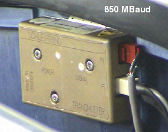

Proprietary to General Electric
Direction 5193755-800, Rev# 8
BrightSpeed (Ltd. Access) Service Methods - Adv
Proprietary to General Electric |
| Required Persons | Preliminary Reqs | Procedure | Finalization |
|---|---|---|---|
| 1 | Timing Not Applicable |
This procedure describes the Slipring Transmitter replacement.
| Last Revised on: | August 16, 2004 |
| Item | Qty | Effectivity | Part# | Manufacturer | |
|---|---|---|---|---|---|
| ESD wrist-band | 1 | - | - | - | |
| 2.5mm hex key | 1 | - | - | - | |
| Item | Qty | Effectivity | Part# | Manufacturer | |
|---|---|---|---|---|---|
| Slipring Transmitter (850 Mbaud) | 1 | - | - | - | |
| Follow ALL required safety and PPE procedures customary for your organization when working on this product. | |
| Condition | Reference | Eff |
|---|---|---|
Only trained service personnel should service the GE CT Scanner. | - | - |
Move table to its lowest elevation.
Remove gantry covers as required.
Refer to Parts Replacement → Gantry → Enclosure → (Cover Removal Procedure).
| Always turn OFF the HVDC before the 120 VAC. Turning OFF 120 VAC power before HVDC power can result in equipment damage. | |
Turn OFF all 3 service switches (Axial Drive, HVDC, 120VAC) on the Service Switch Panel. Follow Lockout/Tagout procedures.
The transmitter is located on the back of the slipring. Locate it by rotating gantry.
| Slip Ring Contamination Possible. Be careful to not contaminate slipring or signal. | |
Remove J1 and J3 cables.
Using a 2.5mm hex key, remove screws holding the transmitter to the slipring.
Illustration 1: 850 MBaud Slipring Transmitter

Replace transmitter.
Hardware Reset
Acquire 10 scouts: (120kV/40mA, 1000mm table movement)
Acquire 100 axials: (120kV/80mA, 0.5 sec. Scan)
Acquire 1 helical: (120kV/40mA, 30 sec. Scan),
Acquire 10 axial scans: (120kV/400mA, 4 sec. Scan)
Verify NO increase in corrected or uncorrected FEC errors. To check HSDCD Statistics: Select Log Viewing, System Browser, Run Time Statistics, DIP Statistics.
Reset DIP Stats: Perform the following procedure to reset cumulative DIP Stats (shown on the Common Service Desktop Home Page):
Open a Unix shell.
Type: cd /usr/g/service/log
Type: mv dip.stats dip.stats.old
Shutdown and restart the system. This will reinitialize the dip.stats file.
Save System State.